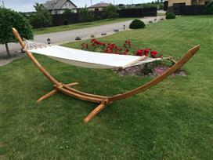

Hamakai Internetu pigiau Žema kaina | b-a.eu
- Hamakai Internetu pigiau Žema kaina | b-a.eu
Gulimi hamakai – tradicinis ir universaliausias modelis. Juose galima ir sėdėti, ir gulėti. Priklausomai nuo to ar norite ilsėtis, ar bendrauti su netoliese esančiais draugais – gulimas hamakas leis tą padaryti, tačiau jo perkėlimui ir įrengimui prireiks šiek tiek daugiau laiko. Taip pat dar yra pakabinami hamakai –„kokonai“. - Hamakai internetu pigiau | pigu.lt
Hamakai internetu pigiau. Didelis kokybiškų hamakų, sėdimų hamakų, dviviečių ir hamakų su stovu pasirinkimas. Nemokamas prekių atsiėmimas pigu.lt parduotuvėse - Hamakai | Hamakai, sodo sūpynės | Senukai.lt
Vienvietis hamakas Thermarest Slacker Single Kodas: slackersingle Patogus, tvirtas, kompaktiškas, lengvai pakabinamas vienvietis hamakas Thermarest Slacker, idealiai tinkantis gamtoje, lauke, terasoje ar balkone. - Hamakai ir jų stovai internetu gera kaina | pigu.lt
Jomis hamakas tvirtinamas tarp dviejų medžių, stulpų ar pan. atramų. Lengvai paruošiamas, patogus gabenti. Sėdimi hamakai. Hamakai, sėdimi hamakai - tai tvirto audeklo arba tinklo gabalas, kurio abiejuose galuose pritvirtinti skersiniai (skersinių gali ir nebūti), o prie šių – virvės. Jomis hamakas tvirtinamas tarp dviejų ... - Hamakai | ARMIJAI IR CIVILIAMS
Sodo hamakas, 270 x 140 cm . 25,99 € Už 1 VNT. Pirkti internetu. Pristatymas negalimas; Galite atsiimti 2 parduotuvėse Pateikti duomenys apie prekių likučius ir kainas tam tikrais atvejais gali skirtis nuo realių prekių kainų ir likučių parduotuvėse. ... - Hamakai ⋆ 4IQ
Hamakas reiškia ,,kabanti lova“, nes savo išvaizda jis ir panašus į kabantį tarp medžių gultą. Gultas gaminamas iš tekstilinių vijelių arba vientiso audinio, kuris pasižymi tvirtumu ir ilgaamžiškumu. Hamako galai priešingose pusėse gali būti tvirtinami prie medžių, specialių stulpų. Dabar gaminamos įvairios hamakų ... - Hamakai poilsiui gamtoje ir namuose
Hamakas, 100x200 cm Hamakas parduodamas be stovo ir laikiklių. Galima pakabinti prie lubų arba medžio. Puikiai tiks terasoje, sode ir pan. Hamakas pagamintas iš tvirtos medžiagos. Išmatavimai: 100 cm x 200 cm. Yra patogūs mediniai skersiniai,... - Internetinė parduotuvė Ermitazas.lt | Hamakai ir jų priedai
Hamakai - puikus poilsis gamtoje ar žygyje. Didelis pasirinkimas - vienviečiai, dviviečiai ar dideli hamakai visai šeimai. Žygyje pravers turistiniai hamakai su tinkleliu nuo uodų ar tentu nuo lietaus. Naujiena - sėdimi hamakai, ramioms poilsio minutėms.. Prekiaujame internetu, gera kaina. Hamakus pristatome visoje Lietuvoje. - hamakas - išsamiai DELFI.lt
Hamakai – patogiam Jūsų laisvalaikio praleidimui. Mėgaukitės akimirkomis gryname ore! - Hamakai - UrmoKaina.lt
Ieškote kokybiškų hamakų? Įvairūs stilingi hamakai, hamakai su stovu, hamakai supynės internetu gera kaina! Įsigykite pigu.lt internetinėje parduotuvėje.
Kalba (language)
Pristatymas (shipping to)
Belarus Germany Denmark Estonia Spain France United Kingdom Ireland Italy Lietuva Latvia Norway Poland Russia Sweden Ukraine KuponaiPrekių katalogas
Baldai ir interjeras Statybinės medžiagos Buitinė technika Namai ir buitis Elektronika namams Metalai Įranga ir įrenginiai Santechnika Prekės vaikams Elektros prekės Laisvalaikio ir sporto prekės Prekės civiliams, kariams, medžiotojams Zoo prekės gyvūnams Medicina, sveikata Sodo daržo prekės Sekso prekės Kvepalai ir kosmetika Apranga, avalynė ir aksesuarai Dovanos, suvenyrai, pramogos Auto-Moto Išmanūs namai Žiūrėti visą prekių katalogą Prisijunkitearba registruokitės Apie b-a.eu Kontaktai D.U.K Kaip pirkti
EUR /
/
Pristatymas: Lietuva
Kalba (language) Lietuvių Latviešu English Pусский Pristatymas (shipping to) Belarus Germany Denmark Estonia Spain France United Kingdom Ireland Italy Lietuva Latvia Norway Poland Russia Sweden Ukraine Prekių krepšelis: 0 Parfumerija Moterims Kvepalai moterims Chanel Christian Dior Versace Hugo Boss Guerlain Lacoste Lancome Gucci Escada Giorgio Armani Serge Lutens Lanvin Moschino Chloe Lady Gaga Mexx Revlon Kenzo Calvin Klein Kosmetikos rinkiniai Kosmetika veidui Makiažo pagrindas Veido pudra Skaistalai Maskuojamos priemonės Kosmetika akims Tušai Šešėliai Akių pieštukai ir kontūrai Kosmetika lūpoms Lūpų dažai Blizgesiai Pieštukai lūpoms Kosmetika nagams Negyvosios jūros produktai Vyrams Kvepalai vyrams Chanel Christian Dior Versace Hugo Boss Lacoste Lancome Gucci Giorgio Armani Lanvin Moschino Mexx Kenzo Calvin Klein Visi kvepalai vyrams Skutimosi priemonės Losjonai, balzamai Skutimosi želė Skutimosi putos Higienos priemonės Šampūnai Dušo želė Dezodorantai/antiperspirantai Burnos higiena Muilas Kojų priežiūrai Naujas Kremai nuo saulės Dekoratyvinė kosmetika Kosmetikos rinkiniai Makeup Trading Elizabeth Arden Estee Lauder Clinique Visi rinkiniai Akių šešėliai Christian Dior Artdeco Dermacol Rimmel London Visi šešėliai akims Akių pieštukai ir kontūrai Lancome Christian Dior Rimmel London Visi akių pieštukai Akių tušai Chanel Lancome Christian Dior L´Oreal Paris Clinique Maybelline Rimmel London Visi akių tušai Makiažo pagrindas Revlon Lancome BOURJOIS Paris Christian Dior Visi makiažo pagrindai Veido pudra Clinique Lancome Visos pudros Skaistalai veidui Rimmel London Dermacol Lūpų dažai Christian Dior Max Factor Visi lūpų dažai Lūpų pieštukai Lūpų blizgesiai Dolce & Gabbana Lancome Visi blizgesiai lūpoms Maskuojamosios priemonės veidui Kosmetika nagams Dermacol Sally Hansen Priežiūra ir higiena Veido priežiūra Kremai veidui Kaukės ir serumai Paakių priežiūra Veido valikliai Asmens higiena Dezodorantai ir antiperspirantai Naujas Depiliacija Burnos higiena Intymi higiena Muilas Vonios druskos, aliejai Plaukų priežiūra Šampūnai Plaukų stiprikliai Plaukų modeliavimui Plaukų kaukės Kondicionieriai ir balzamai Plaukų dažai Viso kūno priežiūra Kūno kremai, losjonai Kūną stangrinančios priemonės Kojų priežiūra Rankų priežiūra Kūno šveitikliai Kremai ir losijonai nuo saulės nudegimų, netolygau įdegio Aromatiniai eteriniai aliejai Negyvosios jūros produktai Negyvoji jūra kūnui Kūno losjonai, kremai, sviestai Dušo želė, šveitikliai Papildomos, spec. priemonės Negyvoji jūra plaukams Plaukų balzamai, kaukės Negyvosios jūros šampūnai Negyvoji jūra veidui Paakių zonai Veido kremai, kaukės Veido valymui Papildomos negyvosios jūros priemonės Baldai Svetainės baldai Sekcijos Sofos, sofos-lovos Minkšti kampai Foteliai ir pufai Svetainės komodos Svetainės staliukai TV staliukai Lentynos Miegamojo baldai Miegamojo lovos Čiužiniai Miegamojo spintos Miegamojo baldų kolekcijos Virtuvės baldai Virtuviniai komplektai Virtuvinės spintelės Virtuviniai stalai Virtuviniai stalviršiai Virtuvės baldų priedai Vonios baldai Vonios baldų kolekcijos Vonios spintelės Sisteminiai baldai Šiuolaikiniai sisteminiai baldai Klasikiniai sisteminiai baldai Jaunuolio baldai Jaunuolio baldų kolekcijos Jaunuolio baldų komplektai Jaunuolio kėdės Valgomojo baldai Valgomojo stalai Valgomojo kėdės Prieškambario baldai Prieškambario kolekcijos Prieškambario komplektai Prieškambario spintos Batų dėžės Kabyklos Dekoratyviniai aksesuarai Paveikslai Baldai vaikams Vaikiškos lovos Spintos vaikams Stalai vaikams Kėdės vaikams Lentynos vaikams Kabyklos vaikams Lauko baldai Lauko stalai Lauko kėdės Įvairūs lauko baldai Lauko baldų komplektai Medžio masyvo baldai Mediniai virtuvės baldai Mediniai miegamojo baldai Mediniai valgomojo baldai Mediniai prieškambario baldai Mediniai staliukai Kiti mediniai baldai Biuro baldai Biuro baldų kolekcijos Biuro kėdės Baro ir restorano baldai Baro, restorano stalai Baro, restorano kėdės Statyboms Statybiniai blokeliai ir plytos Akyto betono blokeliai Silikatiniai blokeliai Silikatinės plytos Keramzitiniai blokeliai Keraminiai blokeliai Keraminės plytos Klinkerinės plytos Betono blokeliai Pamatiniai blokeliai Statybinės sąramos Stogų ir sienų dangos Beasbestinis šiferis Bituminės čerpelės Bituminiai lakštai PVC lakštai Prilydomos dangos Betoninės čerpės Keraminės čerpės Profiluota skarda Cedral apkala Sandwich plokštės Komplektavimo detalės Statybiniai mišiniai Cementas Mūro mišiniai Statybiniai klijai Gipsas Glaistas Išlyginamieji mišiniai Tinko mišiniai Cheminiai priedai Šilumos izoliacija Akmens vata Stiklo mineralinė vata Putų polistirenas Ekonominis polistirolas Termoizoliacinės plokštės Šilumos izoliacinis tinkas Kita šilumos izoliacija Statybinės plokštės Gipso kartonas (GKP) Orientuotų skiedrų plokštės (OSB) Fanera Cemento drožlių plokštės (CDP) Medžio drožlių plokštės (MDP) Medžio plaušo plokštės (MPP) Tvoros Tvorų segmentai Stulpai tvoroms Vartai Tvorų aksesuarai Tinklai tvoroms Skaldytų blokelių tvoros Betoninės tvoros Skardinės tvoros Kaminų sistemos Schiedel kaminai Fibo kaminai Kerapor kaminai Aplinkos tvarkymo elementai Grindinio trinkelės Klinkerio trinkelės Šaligatvio plytelės Kelio ir vejos bordiūrai Šulinių žiedai Dekoratyviniai gaminiai Apdailos medžiagos Apdailos plytelės Grindų apdailos medžiagos Sienų apdailos medžiagos Lubų apdailos medžiagos Apdailos sujungimo profiliai Dažai ir glaistai Emulsiniai dažai Lakai Akriliniai dažai Aliejiniai dažai Grindų dažai Emaliniai dažai Aerozoliniai dažai Dažymo įrankiai Gruntai Glaistai Rūdžių surišėjai, modifikatoriai Medžio tvirtinimo elementai Vinys Medsraigčiai, smeigės Kabliai (pusiaukilpiniai, įsukami) ir kilpos Sraigtai Din 7981, cinkuoti Sraigtai Din 571, cinkuoti Metalo tvirtinimo elementai Varžtai Veržlės Poveržlės Sraigtai Kniedės Vielokaiščiai Skiedikliai ir valikliai Acetonas Nefrazas Nitroskiedikliai Terpentinas Vaitspiritas Žibalas Skiedinio dėmių valikliai Specialios paskirties valikliai Tinklai, lynai, vielos, grandinės Statybiniai tinklai Vieliniai lynai, vielos Grandinės Plieninių lynų ir grandinių tvirtinimo elementai Tvirtinimo elementai Metalo profiliai Kaiščiai GKP tvirtinimo elementai Šilumos izoliacinių medžiagų tvirtinimo elementai Stogų, sienų tvirtinimo elementai Langai, durys, palangės, laiptai Stoglangiai Vidaus ir lauko durys Laiptai Durų stogeliai Palangės Plėvelės stogams ir sienoms Antikondensacinė plėvelė Difuzinė plėvelė Garo izoliacinė plėvelė Priešvėjinė plėvelė Apsauginės medžiagos Statybinė mediena Hidroizoliacija, hermetikai, impregnantai Poliuretaninės putos Pistoletai hermetikams Putų pistoletų valikliai Hidroizoliacinės medžiagos Impregnantai Silikoniniai hermetikai Akriliniai hermetikai Ugniai atsparūs hermetikai Bituminis siūlių užpilas Vandens suvedimo sistemos Lietvamzdžiai ir latakai Paviršinio vandens surinkimas Sodui, daržui Sėklos Daržovių, vaisių Gėlių Prieskonių Šiltnamiai Sodo įrankiai Grąžtai Grėbliai Įrankiai miškui Įrankiai vaikams Karučiai Kastuvai Kirviai Peiliai Pjūklai Šakės Sekatoriai Sodo žirklės Krūmapjovės ir trimeriai Lapų pūstuvai Mini traktoriai Moto blokai Pjūklai (benzininiai, elektriniai) Šakų, malkų smulkintuvai Ūkinės prekės Kopėčios Šluotos Kitos Žoliapjovės, vėjapjovės Fontanai Prekybinės palapinės Sniego valymo technika Sniego kastuvai Sniego stumdytuvai Sniego valytuvai Laisvalaikis Prekės sportui Prekės turizmui Vandens gaiva Prekės žvejybai Muzikos instrumentai Motociklininkui Rimtesniam modeliavimui Vaikams Namams Jai ir Jam Išpardavimai Akcijos Prekių katalogas Mano meniu Daugiau +370 655 42414 +370 699 62969 info@b-a.eu 8:00-17:00 d.d. Laisvalaikio ir sporto prekės Turizmo prekės Hamakai Išvalyti visus filtrus Gamintojas Taip pat siūlome: Kuprinės, krepšiai, lagaminai Maisto gaminimo įranga Miegmaišiai Palapinės Pripučiamos prekės Termosai Turistiniai baldai Turistiniai indai Turistiniai kilimėliaiHamakai internetu pigiau
ATPIGOHamakas BELIZE, Kolibri
Kaina: 43.51 € 59.35 € ATPIGOHamakas BARBADOS, Grenadine
Kaina: 73.29 € 99.96 € ATPIGOHamakas MOSKITO-TRAVELLER
Kaina: 46.75 € 63.77 € ATPIGOHamakas COLOMBIANA, Mandarina
Kaina: 81.02 € 110.51 € ATPIGOHamakas COLOMBIANA, Limona
Kaina: 81.02 € 110.51 € ATPIGOHamakas FLORIDA, Berry
Kaina: 41.84 € 57.06 € ATPIGOHamakas FLORIDA, Aqua
Kaina: 41.84 € 57.06 € ATPIGOHamakas FLORIDA, Kiwi
Kaina: 41.84 € 57.06 € ATPIGOHamakas BELIZE, Vulcano
Kaina: 45.65 € 62.25 € ATPIGOHamakas SILK TRAVELLER, Forest
Kaina: 36.34 € 49.55 € ATPIGOHamakas BARBADOS, Mocca
Kaina: 64.07 € 87.37 € ATPIGOHamakas BARBADOS, Cappuccino
Kaina: 64.07 € 87.37 € ATPIGOHamakas BARBADOS, Acerola
Kaina: 72.78 € 99.26 € ATPIGOHamakas SILK TRAVELLER, Ocean
Kaina: 36.34 € 49.55 € ATPIGOHamakas BARBADOS, Juodas
Kaina: 66.63 € 90.87 € ATPIGOHamakas BRASILIA, Apple
Kaina: 73.24 € 99.87 € ATPIGOHamakas BRASIL GIGANTE, Lava
Kaina: 109.08 € 148.76 € ATPIGOHamakas SILK TRAVELLER, Techno
Kaina: 36.34 € 49.55 € Buvęs 1 2 3 4 5 6 7 8 Kitas Hamakai - šiuo metu Jūs esate šioje grupėje. Hamakai internetu b-a.eu. Palanki kaina. Patogūs ir aukštos kokybės, patvarūs hamakai internetu. Geros kainos ir akcijos. pristatymas į namus. Nuolaidos. Kaina perkant internetu šioje prekių grupėje hamakai tai puikus pasirinkimas kiekvienam klientui. Grupėje turizmo prekės visada yra galimybė įsigyti prekes pigiau. Nepatingėkite pasiteirauti geresnės kainos ir mūsų vadybininkai esant galimybei pasiūlys Jums pigiau hamakai grupės prekes. Lankomiausios šioje grupėje turizmo prekės prekės yra šios - automatinė žieminė palapinė f2f standart; turistinis stalas home 122x60x74cm; elektrinė pompa bestway; elektrinė priešpiečių dėžutė beper bc.160a; elektrinis pietų termosas adler ad 4474 gn; krepšys peak; palapinė funster mosaic blue size 2; kuprinė nike max air vapor speed ba5427-010; miegmaišis extra dry bag 10l fjord nansen; miegmaišis blue;Pristatymas visoje Lietuvoje - Vilniuje, Kaune, Klaipėdoje, Šiauliuose, Panevėžyje, Alytuje, Marijampolėje, Mažeikiuose, Jonavoje, Utenoje, Kėdainiuose, Telšiuose, Visagine, Tauragėje, Ukmergėje, Plungėje, Kretingoje, Šilutėje, Radviliškyje, Palangoje, Gargžduose, Druskininkuose, Rokiškyje, Biržuose, Elektrėnuose, Garliavoje, Kuršėnuose, Jurbarke, Vilkaviškyje, Raseiniuose, Anykščiuose, Lentvaryje, Grigiškėse, Naujojoje Akmenėje, Prienuose, Joniškyje, Kelmėje, Varėnoje, Kaišiadoryje, Pasvalyje, Kupiškyje, Zarasuose.
Hamakai: kai suptis vėjyje taip gera...
Hamakai – ne tik lauko, tačiau ir kambario, terasos arba balkono puošmena, kuri leis atsipalaiduoti ir po sunkių dienos darbų pasinerti į poilsio magiją. B-a.eu hamakai pritaikyti tiek lauko, tiek patalpos poreikiams, tad tai galimybė suptis tarsi bangose ne tik vasaros, tačiau ir žiemos metu.
Šiuo metu egzistuoja labai daug įvairiausių atsipalaidavimo priemonių, o hamakai labai dažnai įvardijami kaip pati paprasčiausia, tačiau taip pat ir originaliausia. Juk daugelis mūsų vaikystėje visas dienas leisdavo hamake pas močiutę kaime, o tuomet ir šypsena niekada nedingdavo nuo veido.
Taigi, hamakai internetu – galimybė susikurti savo poilsio oazę pigiai ir greitai. O kai B-a.eu teikia tokį platų pasirinkimą, kad kiekvienas ieškantis ras tai, kas jam labiausiai tinka!
Kaip pasirinkti tinkamiausią hamaką?
Nežinote, koks hamakas tinka labiausiai, o kai pasirinkimas toks platus, atrodo, kad susirasti tinkamiausią sunku? Tam tikra prasme tai yra gerai, kadangi taip atveriamos galimybės geriausiai patenkinti savo bei savo piniginės poreikius. Visada galite susisiekti su mūsų konsultantais, kurie labai mielai patars bei padės rasti tai, kas Jums labiausiai tinka. Tuo pačiu pateikiame ir mes mini planelį, kuris daugeliui žmonių labai supaprastina paieškas ir garantuoja, kad galiausiai rasite tai, kad leis pasinerti į poilsio bei vaikystės pasaulį.
Kaina dažniausiai yra vienas svarbiausių kriterijų, kuris apsprendžia, kuris konkrečiai variantas yra pasirenkamas. Pirkti internetu geriau vien todėl, kadangi kur kas paprasčiau palyginti kainoraščius bei nusistatyti vidutinę hamakų investiciją. Vėliau derinant visus kitus kriterijus pavyks atrasti ir patį tinkamiausią. Juolab, akcija leis sutaupyti, o internete jas pamatyti yra kur kas paprasčiau. Užsiregistruokite ir pats pirmas gaukite išmanius pasiūlymus. Kitas svarbus kriterijus, kurį visada verta įvertinti – dydis . Siūlome labai platų skirtingų dydžių hamakų pasirinkimą, kurie pritaikyti tiek vaikams, tiek suaugusiems. Šiuo metu labai mėgstami hamakai, kuriuose gali gulėti du žmonės. Juk atsipalaidavimas dviese yra kur kas malonesnis. Sėdėjimo plotas gali būti nuo 100 x 130 iki 220 x 140 ir daug kitų matmenų, kurie jums leis pasirinkti tinkamiausią hamaką. Hamakai taip pat turėtų būti pasirenkami įvertinus ir tai, kokį svorį jie gali išlaikyti. Kadangi šiuolaikiniai hamakai yra gaminami iš labai kokybiškų medžiagų, tai atveria galimybes susirasti tokį, kuris sėkmingai išlaikys net ir 200 kg žmogų (arba du žmones). Svarbiausia įvertinti ne tik savo poreikius, tačiau taip pat ir atramas prie kurių hamakas bus kabinamas. Žiūrėkite ne tik į tai, kad hamako medžiaga bus užtektinai kokybiška, kad sėkmingai išlaikytų didelį svorį, tačiau apgalvokite, kurioje vietoje kabinamas hamakas sėkmingai laikysis. Kol vieniems smulkmena, kitiems svarbus kriterijus yra išvaizda . O B-a.eu siūlo tokių skirtingų hamakų pasirinkimą, jog kiekvienas ras tinkamiausią puikiai deranti tiek jo namuose, tiek sode. Nuo labiau klasikinių iki modernių hamakų, kuri leis suptis vėjyje stilingai!. Pozicija lemia, kaip hamake bus leidžiamas laike. Daugeliui hamakas asocijuojasi su gulėjimu, tačiau nepamirškite, kad pastarasis gali būti ir sėdimas. Tokie hamakai dažniausiai kabinami terasose arba namuose. Atrodo labai estetiškai, juolab, tai tampa puikia savianalizės bei poilsio vieta namuose. Techninės charakteristikos garantuoja, kad naudojimasis hamaku bus kur kas patogesnis, tad labai svarbu jas visas įvertinti: kartelės ilgis, kabinimo aukštis, atstumas nuo žemės ir panašiai. Kuo daugiau detalių įvertinsite – tuo tikresnis galite būti, kad pasirinktas hamakas visapusiškai patenkins Jūsų poreikius.Nuostabūs hamakai pigiau leis puikiai praleisti laiką gryname ore, sugrįžti į vaikystę bei susikurti savo poilsio zoną, kuri priklausys tik Jums.
Hamakų pasirinkimas internete dažniausiai viršija lūkesčius dėl plataus pasirinkimo, kainų ar pigumo
Kiek iš jūsų turi sodybas už miesto? Turbūt ne vienas ir ne du. Lietuvoje, kaip ir didžiojoje dalyje Europos, yra populiaru turėti sodo namelį ar sklypą už miesto, kur galima nuvažiuoti savaitgaliai pailsėti, atsipūsti nuo miesto triukšmo. Tokiose sodybose dažnai yra auginamos ir įvairios daržovės, vaisiai. Kai kurie žmonės būtent šiam užsiėmimui, o ne poilsiui, ir skiria daugiausia laiko. Tačiau kita dalis mėgsta važiuoti į sodus tik atsipūsti, pasideginti saulėje ar ramiai hamake paskaityti knygą. Tiesa, pastarasis variantas, atrodo, Lietuvoje populiarėja. Hamakai yra parduodami įvairiose internetinėse parduotuvėse,tame tarpe ir b-a.eu. Vieni jų skirti trumpam poilsiui, o kituose gi galima ir nakvoti. Hamakai yra nesunkiai įtvirtinami tarp dviejų medžių ir juose gulint galima mėgautis maloniu pavėsiu. Tačiau tai ne vienintelis daiktas sode, kuris gali užtikrinti jūsų ramų poilsį.
Hamakus galite rinktis iš skirtingų išmatavimų, spalvų, medžiagų, gamintojų, kainų ir kita.Jei pirmuma teikiate kaina,rinkdamiesi internete hamaką,atsifiltruokite hamakus pagal pigumą/brangumą.tada galėsite pradeti rinktis nuo pigiausių. Hamakas yra nesudėtingas įrenginys, kuris yra skirtas miegojimui, gulėjimui ir kitam poilsiui. Tai tvirto audeklo arba tinklo gabalas, kurio abiejuose galuose pritvirtinti skersiniai (skersinių gali ir nebūti), o prie šių – virvės. Jomis hamakas tvirtinamas tarp dviejų medžių, stulpų ar kitokių atramų. Lengvai paruošiamas, patogus gabenti. Hamakai labai populiarūs yra tropinio klimato kraštuose, paplūdimiuose, laivuose ir kitur. Džiunglėse miegojimas hamakuose apsaugo nuo vabzdžių, drėgno paviršiaus, dėl laisvesnio oro cirkuliavimo mažiau perkaistama. Taigi hamakai suteikia egzotiško poilsio jausmą ir atsipalaidavimą šiltomis atostogų dienomis. Hamakus internete galite rinktis iš klasikinio arba modernaus stiliaus. Hamakas pagamintas iš kokybiškų medžiagų leidžia jaustis visiškai saugiam.
Hamakus galite rinktis iš hamakų su kartelėmis, hamakų kėdžių, kelioninių hamakų, vaikiškų hamakų ir kitos paskirties. Hamaką galite tvirtinti, kabinti tiek namuose turint laisvos vietos, tiek ir lauke. Tokia maža kabanti poilsio oazė, patogiausiai vieta skaityti knygą, gurkšnoti arbatą, saldžiai snausti ar tiesiog paskęsti mintyse. Hamaką namuose galite tvirtinti prie medinių sijų, lubų ar kolonų. Erdvei jis suteiks žaismingumo, faktūriškumo, romantikos ir primins saulėtas dienas. Pasikliaudami fantazija ar susiradę informaciją, medžiagas hamaką galite pasigaminti nesudėtingai ir pats. Taigi hamakas - tai nepakeičiamas poilsio įrankis visiems, turintiems bent kelis kvadratinius metrus žemės lopinėlio ir porą medžių. Jūs galite praleisti puikų laiką gryname ore, patogiai gulėdami hamake ir leisdami mintims vytis debesis. Taigi jeigu nežinote kokį hamaką pasirinkti, visada Jums gali padėti šios srities specialistas, konsultantas. Hamaką rinkitės tik iš patikimų gamintojų, kurie suteikia garantiją, užtikrina kokybę, ilgaamžiškumą.
Hamaką galite greitai išsirinkti ir užsisakyti tiesiog internetu, nes čia galite rinktis iš plataus asortimento, nereikia gaišti laiko važinėjant į parduotuves, galima sutaupyti pinigų ir laiko.
Apie mus D.U.K Garantijos ir grąžinimas Prekių pristatymas Kontaktai Partneriai Reklama Prekių istorija Sales and Export© 2010-2020 b-a.eu. Visos teisės saugomos.
Erikab-a.eu konsultantė Sveiki, turite klausimų?
Mes Jums padėsime!
Parašykite man el. paštu: info@b-a.eu × Erika
b-a.eu konsultantė Sveiki, turite klausimų?
Mes Jums padėsime!
Parašykite man laišką el. paštu: info@b-a.eu Uždaryti
